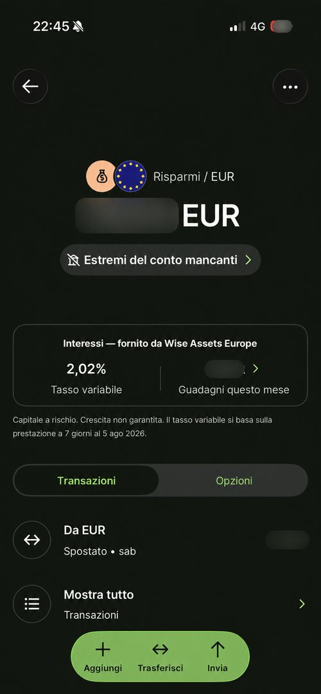

📌 In sintesi
"Interessi" è il nome commerciale di un servizio di investimento offerto da Wise Assets Europe AS, impresa di investimento estone (non Wise Europe SA, che gestisce conto e pagamenti). Quando lo attivi, il saldo scelto viene investito in quote di un fondo monetario (per la maggior parte dei clienti SEE, un fondo BlackRock). Il tasso mostrato in app è un dato annualizzato dalla performance degli ultimi 7 giorni, non un tasso promesso: per l'euro, l'ultimo dato tracciato è 2,02% (5 agosto 2026, già al netto della commissione dichiarata). La protezione non è quella di un deposito bancario: c'è segregazione patrimoniale più uno schema estone di indennizzo fino a 20.000€, non la garanzia depositi fino a 100.000€. Il capitale non è garantito.

Screenshot reale dal mio conto Wise: Risparmi EUR con tasso variabile 2,02%, e l'avviso ufficiale "Capitale a rischio. Crescita non garantita. Il tasso variabile si basa sulla prestazione a 7 giorni al 5 ago 2026" di Wise Assets Europe.
Cos'è "Interessi" (e perché non è un conto deposito)
Quando tieni denaro fermo sul conto Wise in euro, dollari o sterline, puoi attivare "Interessi". A quel punto il saldo scelto viene spostato in quote di un fondo del mercato monetario, gestito non dalla stessa entità che gestisce conto e carta, ma da Wise Assets Europe AS — impresa di investimento con numero di registrazione 16267372, autorizzata in Estonia dal 24 ottobre 2022 (licenza n. 4.1-1/174) e vigilata dalla Finantsinspektsioon. L'autorizzazione copre ricezione, trasmissione ed esecuzione di ordini, custodia e amministrazione di strumenti finanziari e i relativi servizi valutari. Wise Europe SA, invece, continua a occuparsi solo dei servizi di pagamento.
È importante essere precisi sul linguaggio: questo non è un conto deposito bancario come quello di una banca tradizionale. È un prodotto di investimento, seppur a basso rischio, in cui il rendimento non è garantito e il capitale non è protetto da un fondo di garanzia dei depositi.
BlackRock non è il fornitore dell'app né la tua controparte di pagamento: è semplicemente il gestore dei fondi che Wise indica per la maggior parte dei clienti SEE. In alcuni paesi o coorti, Wise può usare fondi o gestori diversi (anche JPMorgan): per questo il nome e l'ISIN che vedi nella tua app prevalgono sempre su questa guida generale.
"Questa è la differenza più importante da capire tra Wise e Revolut sul fronte risparmio: il 'deposito senza vincoli' di Revolut è un interesse bancario su un conto protetto fino a 100.000€. Gli Interessi Wise sono un investimento in fondi monetari, a basso rischio ma non garantito. Guarda sempre la natura del prodotto prima del numero in evidenza: '2,02%' può sembrare un tasso da conto deposito, ma qui è una stima annualizzata sulla performance recente del fondo."
In cosa vengono investiti i soldi
Attivando Interessi su un saldo, Wise Assets investe automaticamente l'importo nella classe di quote associata a quella valuta. I fondi puntano a generare reddito corrente mantenendo capitale e liquidità in condizioni normali, tramite debito pubblico a breve termine, strumenti del mercato monetario, pronti contro termine inversi e liquidità.
| Valuta | Fondo BlackRock indicato per i clienti SEE | Classe / ISIN |
|---|---|---|
| EUR | BlackRock ICS Euro Government Liquidity Fund | Premier Acc T0 · IE00B41N0724 |
| USD | BlackRock ICS US Treasury Fund | Premier Acc · IE00B45H7020 |
| GBP | BlackRock ICS Sterling Government Liquidity Fund | Premier Acc IE00B43PVC83 oppure Premier Acc T0 IE00B40L6351 |
L'assegnazione può dipendere dal paese, dalla data di apertura del saldo e dalla classe disponibile: per alcuni saldi GBP aperti dopo il 14 febbraio 2024, Wise può usare l'una o l'altra classe indicata. Controlla sempre il KID collegato nella tua app.
Quanto rende (e come si legge il tasso)
Il rendimento è variabile. Il numero che vedi in app non è un tasso fisso promesso: è un'annualizzazione della performance realizzata dal fondo negli ultimi 7 giorni — utile per confrontare il rendimento corrente, ma non equivale alla performance già ottenuta in un anno e non garantisce quella futura.
| Fonte e data | EUR | GBP | USD |
|---|---|---|---|
| Mio conto reale, 24/06/2026 | 1,98% | — | — |
| Wise Italia, 23/06/2026 | 1,98% | 3,25% | 3,39% |
| Wise, 05/08/2026 (dato più recente) | 2,02% | 3,32% | 3,44% |
Tengo tutti i dati con data perché pagina, paese, fondo o coorte possono differire dal tuo caso: verifica sempre il tasso aggiornato nell'app prima di attivare la funzione.
Dire che il tasso "segue BCE, Fed o Bank of England" è una semplificazione accettabile solo con una precisazione: il fondo tende a muoversi con i tassi monetari della propria valuta, ma non li replica meccanicamente — contano anche composizione, scadenze, spread e costi. I benchmark tecnici di riferimento sono in genere €STR per l'euro, SOFR per il dollaro e SONIA per la sterlina.
Quello che vedi nell'app, in sintesi:
- Tasso: annualizzazione della performance recente, non una promessa.
- Guadagni: crescita del valore dell'investimento aggiornata ogni giorno lavorativo — non necessariamente un accredito separato visibile in cronologia.
- Saldo disponibile: valore utilizzabile, soggetto alle regole di accesso istantaneo e ai limiti operativi.
- Totale guadagnato: dato del tuo investimento, da non confondere con il rendimento futuro o con il guadagno netto dopo le tasse italiane.
Quanto costa
Paghi due livelli di costo: una commissione Wise, calcolata ogni giorno e normalmente addebitata su base mensile, e una commissione del gestore del fondo, già incorporata nel valore delle quote. Per i fondi BlackRock indicati nella documentazione SEE, la commissione del fondo è dello 0,10% annuo.
| Valuta | Commissione Wise | Commissione fondo | Totale indicativo |
|---|---|---|---|
| EUR | 0,16-0,17% annuo | 0,10% | 0,26-0,27% |
| GBP | 0,45-0,46% annuo | 0,10% | 0,55-0,56% |
| USD | 0,18-0,19% annuo | 0,10% | 0,28-0,29% |
Wise pubblicizza il tasso EUR come "già al netto dello 0,26%": è corretto per la specifica pagina/coorte a cui si riferisce, non una regola universale per ogni cliente — controlla sempre la schermata commissioni nella tua app. In ogni caso, il rendimento mostrato è al netto dei costi che Wise dichiara di aver già incluso, ma non è netto delle imposte italiane e non è un risultato futuro garantito.
Il saldo investito è sempre disponibile?
In condizioni normali puoi usare il saldo per pagamenti, carta, conversioni e bonifici senza disattivare manualmente Interessi: Wise vende automaticamente la quantità di quote necessaria. Ma "sempre immediatamente disponibile" è una formula troppo assoluta: i contratti prevedono regole di accesso istantaneo, giorni non operativi, orari limite e possibili ritardi o sospensioni nei momenti di instabilità dei mercati. Superate certe soglie giornaliere, le condizioni possono prevedere un tempo di elaborazione fino a due giorni lavorativi — soglie che variano per paese e versione contrattuale: fa fede sempre il limite mostrato in app prima dell'invio.
"Per un'emergenza da pagare in pochi minuti, non trattare 'istantaneo' come una garanzia. Tieni comunque una piccola riserva sul saldo ordinario o su un conto bancario separato."
Il capitale è garantito?
No. Le quote dei clienti sono tenute separate dal patrimonio aziendale di Wise Assets, con riconciliazioni giornaliere e custodia segregata dichiarate da Wise: se Wise Assets diventasse insolvente, i creditori non dovrebbero poter usare le tue quote per pagare i debiti della società. In aggiunta, l'Investor Protection Sectoral Fund estone può riconoscere fino a 20.000€ se l'impresa di investimento non è in grado di adempiere ai propri obblighi.
Questa copertura non rimborsa le perdite di mercato: non copre il calo del valore delle quote, un default dei titoli nel fondo o una performance negativa. E soprattutto, non si applica la garanzia bancaria sui depositi fino a 100.000€ — dire che Interessi "non è coperto da alcuna garanzia" è impreciso quanto dire che è sicuro come un deposito: mancano la garanzia depositi, ma esistono segregazione patrimoniale e un indennizzo limitato in caso di inadempimento dell'intermediario. Il dettaglio completo su come Wise protegge i fondi dei clienti, incluso il confronto diretto tra saldo ordinario e Interessi, è nella guida Wise è sicuro? →
⚠️ Capitale a rischio: "basso rischio" non significa "senza rischio". I fondi monetari possono essere esposti a rischio di credito, liquidità, controparte, tasso e default degli emittenti, oltre al rischio cambio se investi in una valuta diversa da quella in cui spendi.
I rischi, uno per uno
| Rischio | Come può incidere |
|---|---|
| Perdita di capitale | Il valore delle quote può scendere; il capitale non è protetto né garantito. |
| Volatilità | I fondi monetari tendono ad avere oscillazioni contenute, ma non impossibili. |
| Credito / default | Un default sovrano, un problema di controparte sui pronti contro termine o un peggioramento del merito creditizio possono generare perdite. |
| Tasso | Quando i tassi scendono, il rendimento corrente scende; con tassi netti negativi il valore delle quote può calare. |
| Cambio | Se ragioni in euro ma investi in GBP o USD, la valuta può amplificare guadagni o perdite. |
| Liquidità | In condizioni di stress di mercato, accesso, vendita o trasferimento possono ritardare. |
| Operativo / intermediario | Errori, insolvenza o problemi dell'infrastruttura possono ritardare il recupero: segregazione e schema di indennizzo riducono il rischio, non lo eliminano. |
| Fiscale | Una dichiarazione errata di redditi, RW o IVAFE può portare a sanzioni. |
Come vengono tassati gli interessi in Italia
⚠️ Parte delicata: Wise non fornisce consulenza fiscale, e la classificazione dichiarativa dipende dai documenti del tuo rapporto e dalle operazioni che fai. Quello che segue è informativo: per importi rilevanti, parlane con un commercialista che conosca OICR esteri e monitoraggio fiscale.
Per un residente fiscale italiano, le quote di un fondo estero detenute tramite un intermediario non residente sono in genere un'attività finanziaria estera. Wise Assets Europe AS non risulta un intermediario residente che applichi il regime amministrato italiano: non dare per scontata una ritenuta automatica italiana.
- Redditi: i proventi positivi di fondi esteri armonizzati sono normalmente soggetti al 26%. In assenza di un sostituto d'imposta residente, vanno dichiarati dal contribuente, di norma nella sezione dedicata ai redditi di capitale di fonte estera.
- Quadro RW / quadro W: normalmente dovuto per monitorare quote e attività finanziarie estere, anche se chiudi l'investimento durante l'anno. Nel modello 730 si usa il quadro W, in Redditi PF il quadro RW.
- IVAFE: per prodotti finanziari esteri è normalmente pari allo 0,2% annuo, proporzionata a quota e giorni di possesso. Non applicare la franchigia dei 5.000€ propria dei conti correnti: qui il fondo non è un conto.
- Minusvalenze: una perdita al rimborso può qualificarsi come reddito diverso e, se correttamente certificata e dichiarata, contribuire allo zainetto fiscale nei limiti di legge — ma non può compensare i proventi del fondo, che sono redditi di capitale. Verifica sempre la documentazione Wise con un professionista.
- Cambio: i calcoli fiscali italiani richiedono valori in euro, convertiti con le regole previste dalle istruzioni applicabili.
Lo scambio automatico di informazioni CRS tra paesi non equivale a una dichiarazione precompilata né al pagamento delle imposte dovute. Conserva estratti, movimenti, valore iniziale e finale, giorni di possesso, costi, KID e report annuale: ti serviranno in dichiarazione.
Interessi vs saldo Wise ordinario
| Saldo Wise ordinario | Wise Interessi | |
|---|---|---|
| Natura | Moneta elettronica / servizio di pagamento | Quote di fondo tramite servizio di investimento |
| Rendimento | Non contrattualmente dovuto | Performance del fondo, variabile |
| Capitale | Salvaguardato secondo le regole dei pagamenti, non è un deposito bancario | A rischio di mercato, non garantito |
| Protezione | Safeguarding, non garanzia depositi | Segregazione + schema investitori fino a 20.000€ |
| Fiscalità | Dipende dal rapporto | Fondo estero: monitoraggio e IVAFE normalmente rilevanti |
Interessi Wise vs deposito Revolut vs liquidità Trade Republic
| Prodotto | Natura | Protezione | Fisco Italia |
|---|---|---|---|
| Wise Interessi | Investimento in fondo monetario | Segregazione + schema estone fino a 20.000€, niente garanzia depositi | Redditi di capitale, RW/W e IVAFE, tipicamente senza ritenuta automatica |
| Revolut, deposito senza vincoli | Deposito a vista presso Revolut Bank UAB | Garanzia depositi lituana fino a 100.000€ | Ritenuta italiana sul rendimento secondo documentazione applicabile |
| Trade Republic, liquidità | Deposito bancario o fondo monetario, a seconda dell'allocazione | Garanzia depositi sulla quota bancaria entro i limiti previsti; nessuna garanzia sulla quota in fondi | Con IBAN italiano, regime amministrato per la parte coperta |
Il confronto riguarda la struttura del prodotto, non stabilisce quale sia il migliore: tassi, soglie e trattamento fiscale possono cambiare. Il confronto completo tra Wise e Revolut, con tutti i numeri aggiornati, è qui: Wise vs Revolut, quale conviene →
La mia esperienza reale
Sul mio conto reale, il 24 giugno 2026 la schermata euro mostrava 1,98% variabile, calcolato sulla performance degli ultimi 7 giorni. È una prova utile della mia esperienza d'uso, non una fonte normativa e non il tasso garantito a tutti. Se il tuo numero è diverso, non significa che uno dei due sia sbagliato: possono cambiare data, paese, fondo, classe o commissione applicata al tuo profilo.

Screenshot reale dal mio conto Wise, 24 giugno 2026: 10 EUR con tasso variabile 1,98%. Lo tengo qui come promemoria di quanto il tasso sia cambiato in poche settimane.
Cosa controllare periodicamente
Se attivi Interessi, vale la pena tenere sotto controllo questi punti — è la parte noiosa ma utile, soprattutto quando arriva il momento della dichiarazione:
- salva uno screenshot del tasso con la data, così hai una cronologia tua;
- controlla fondo, classe e ISIN assegnati nel tuo profilo;
- verifica la commissione Wise e quella del fondo separatamente, senza sommarle due volte se il tasso mostrato è già "al netto";
- scarica l'estratto e il report annuale;
- registra saldo iniziale, saldo finale, versamenti, prelievi e giorni di possesso;
- se detieni GBP o USD, registra anche i cambi in euro;
- controlla eventuali modifiche a KID, contratto e schema di indennizzo;
- prima della dichiarazione, verifica redditi, quadro RW/W e IVAFE con un professionista.
Domande frequenti
Wise Interessi è un conto deposito?
No. È un servizio di investimento in quote di un fondo monetario, offerto da Wise Assets Europe AS. Non è un deposito presso una banca.
In cosa investe Wise quando attivo Interessi?
Nella maggior parte dei paesi SEE, in fondi del mercato monetario BlackRock (uno per EUR, uno per USD, uno per GBP). Fondo, classe e ISIN possono variare per paese o coorte: verifica sempre il KID nella tua app.
Il tasso mostrato segue BCE, Fed o Bank of England?
Lo segue in senso economico, ma non lo replica meccanicamente. Il fondo investe sul mercato monetario della valuta, e sul risultato pesano anche composizione, scadenze e costi.
Il rendimento che vedo nell'app è quello che riceverò?
No. È un'estrapolazione annualizzata della performance degli ultimi 7 giorni, al netto dei costi dichiarati da Wise ma prima delle tasse italiane. Non è un tasso promesso per i prossimi 12 mesi.
Guarda sempre la natura giuridica del prodotto prima del numero in evidenza: un tasso alto non compensa una protezione più debole, se non sai a cosa stai rinunciando.
Il saldo investito è sempre disponibile?
Normalmente sì, per pagamenti e trasferimenti, senza doverlo disattivare a mano. Ma non è una garanzia assoluta: soglie giornaliere, orari limite e condizioni di mercato possono richiedere fino a due giorni lavorativi.
Il capitale è garantito?
No. È protetto da segregazione patrimoniale e da uno schema estone di indennizzo fino a 20.000€, ma non dalla garanzia sui depositi bancari fino a 100.000€, e non copre le normali perdite di mercato del fondo.
Come vengono tassati gli interessi Wise in Italia?
Come reddito di capitale estero, di norma al 26%, con obbligo di monitoraggio (quadro RW/W) e IVAFE proporzionale allo 0,2% annuo. Wise non sembra applicare una ritenuta italiana automatica: verifica con un commercialista.
Conviene di più Interessi Wise o un deposito bancario come quello di Revolut?
Sono prodotti diversi. Interessi Wise è un investimento senza garanzia depositi, il deposito Revolut è un prodotto bancario coperto fino a 100.000€. Il confronto completo, con i numeri di entrambi, è qui: Wise vs Revolut →
Cronologia essenziale: 24/06/2026, mio conto reale: EUR 1,98%. 23/06/2026, Wise Italia: EUR 1,98%, GBP 3,25%, USD 3,39%. 05/08/2026, Wise: EUR 2,02%, GBP 3,32%, USD 3,44%.
Disclaimer
Contenuto informativo, non consulenza finanziaria, fiscale o legale. Il rendimento deriva da un investimento ed è variabile; il capitale è a rischio e la crescita non è garantita. Condizioni, fondi, classi, commissioni, disponibilità, soglie e fiscalità possono cambiare o variare tra utenti e paesi. Prima di attivare la funzione, leggi contratto, KID, prospetto e documentazione fiscale del tuo account.
Ultima verifica: 25/08/2026. Le condizioni mostrate nella tua app prevalgono sempre per il tuo caso specifico.
Altre guide Wise
- 📘 Guida introduttiva
- ⚙️ Come funziona: uso quotidiano
- 🎁 Bonus e programma inviti
- 💱 Commissioni di cambio
- 💳 Carta Wise
- 🔒 Wise è sicuro?
- ❓ FAQ complete
Vuoi provare Wise?
Apri il conto gratuito e valuta se attivare gli Interessi dopo aver letto bene le condizioni nell'app.
Apri Wise oraUltimo aggiornamento: